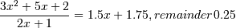

numpy.polydiv¶
- numpy.polydiv(u, v)[source]¶
Returns the quotient and remainder of polynomial division.
The input arrays are the coefficients (including any coefficients equal to zero) of the “numerator” (dividend) and “denominator” (divisor) polynomials, respectively.
Parameters : u : array_like or poly1d
Dividend polynomial’s coefficients.
v : array_like or poly1d
Divisor polynomial’s coefficients.
Returns : q : ndarray
Coefficients, including those equal to zero, of the quotient.
r : ndarray
Coefficients, including those equal to zero, of the remainder.
Notes
Both u and v must be 0-d or 1-d (ndim = 0 or 1), but u.ndim need not equal v.ndim. In other words, all four possible combinations - u.ndim = v.ndim = 0, u.ndim = v.ndim = 1, u.ndim = 1, v.ndim = 0, and u.ndim = 0, v.ndim = 1 - work.
Examples

>>> x = np.array([3.0, 5.0, 2.0]) >>> y = np.array([2.0, 1.0]) >>> np.polydiv(x, y) (array([ 1.5 , 1.75]), array([ 0.25]))